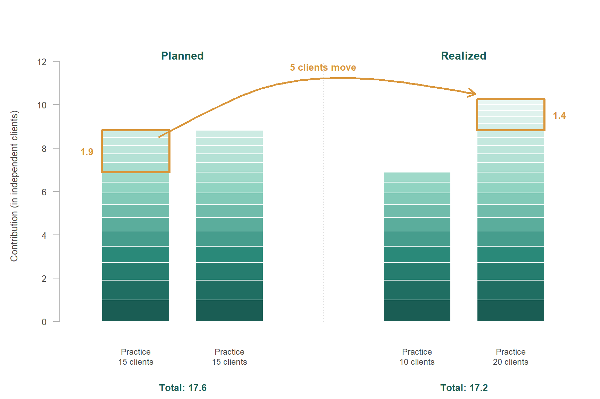
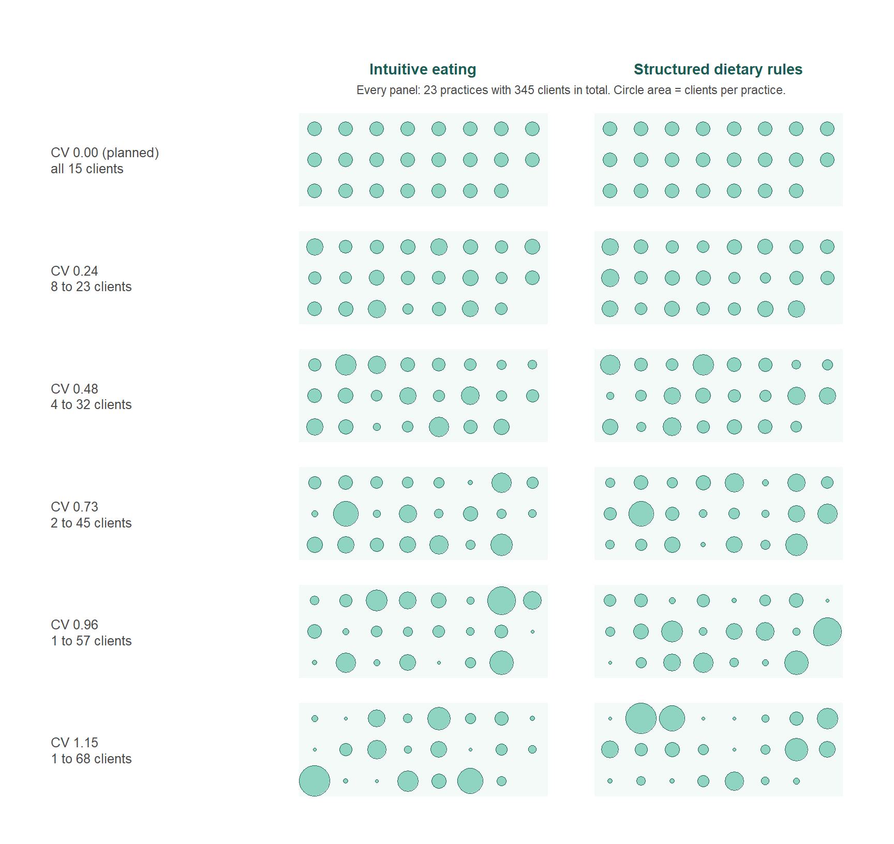
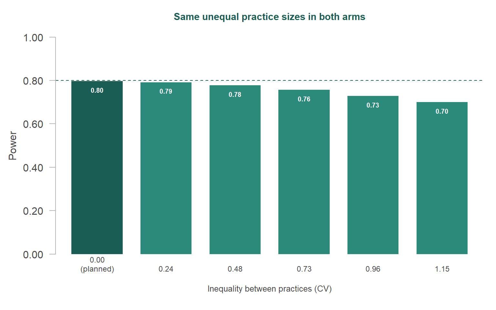
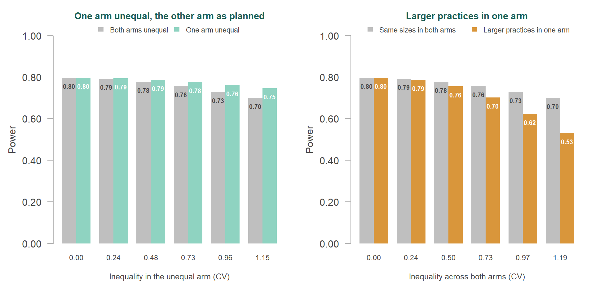
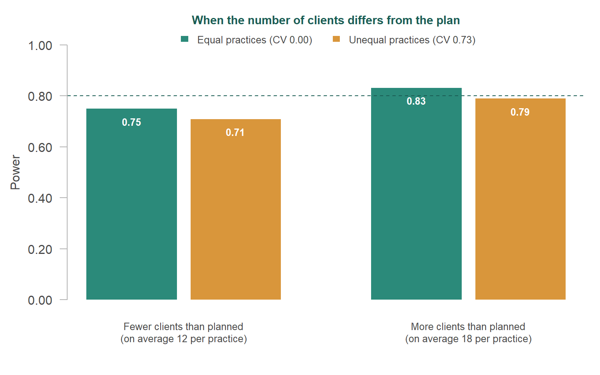

⚖️ Your power analysis assumed 15 clients per practice. What happens to the power when some practices recruit 5 clients and others 30?
Before a study starts, the researcher has to decide how many participants to include, aiming to give the study a sufficiently high probability of detecting an effect, if that effect really exists. The researcher sets this probability - the statistical power - in advance, often at 80%. In practice, power analysis is used for this: a calculation based on a series of educated guesses or assumptions about what the data will look like, such as the expected size of the effect. The researcher has to make these assumptions before any data are collected. When those assumptions turn out to be wrong, the study can end up with less power than the researcher intended, and therefore with a larger risk of missing an effect that does exist.
In many studies, the researcher does not recruit participants one by one but through groups. A clinical psychologist recruits clients through psychology practices, an educational researcher recruits pupils through schools, and a medical researcher recruits patients through hospitals. The data from such studies are clustered (or multilevel or nested) data, with the groups being clusters. Clustered data occur in many kinds of studies. This post focuses on trials in which the researcher randomizes whole clusters instead of individual participants. All participants within a cluster then are assigned to the same condition and receive the same intervention or treatment. Such trials are called cluster-randomized trials. Whether the researcher randomizes clusters or individual participants, the clustering has consequences for the power analysis. The researcher then has to make additional assumptions, and one of these assumptions is the subject of this post.
When a researcher plans the sample size for a study with clustered data, the plan always contains an assumption about the number of participants in each cluster, whether the researcher makes that assumption consciously or not. To see why this assumption plays a role, consider what clustering means for a power analysis. Participants within the same cluster tend to resemble each other. Each additional participant from a cluster that is already in the study therefore contributes less than a participant from a new cluster would. A power analysis for such a trial takes this into account. The calculation therefore always assumes how the participants are spread across the clusters, even when the researcher does not choose that spread explicitly.
The simplest choice is to assume that every cluster contributes the same number of participants, usually the number the researcher expects on average. This choice is both convenient and understandable. It is convenient, because the power analysis then needs only one number. It is understandable, because the researcher often does not know in advance which clusters will recruit more and which fewer. But it has a consequence that is easy to overlook. As Part 1 of this series showed, equal clusters give the highest power that can be reached with a given number of participants. A power analysis that assumes equal clusters therefore describes the most favourable way in which the participants could be spread, and the power it reports holds only for that situation. This post examines how far the actual power can end up from the planned power when the clusters turn out to differ in size. Figure 1 shows what is at stake in the running example of this series, which the next paragraph introduces.
This post illustrates the problem with the running example of the series. A trial compares intuitive eating with structured dietary rules in adults with subclinical eating and body image concerns. Psychology practices are randomized, so all clients within a practice receive the same intervention. If clients were independent, 198 clients per arm would give 80% power to detect a standardized effect of 0.25 with a one-sided α of 0.05. Clients within the same practice tend to resemble each other. The intraclass correlation (ICC) expresses how strongly they resemble each other, as the share of the variation in body image that is due to differences between practices. With an ICC of 0.05, the trial needs more clients than that. A standard power analysis that assumes 15 clients per practice arrives at 23 practices per arm. The rest of this post calls the clusters practices and the participants clients.
Trial
Intuitive eating versus structured dietary rules
Adults with subclinical eating and body image concerns
Clusters
Psychology practices
Randomized as a whole
Outcome
Body image
Expected standardized effect of 0.25
Similarity within practices
ICC = 0.05
Share of the variation due to differences between practices
Target
Power of 80%
One-sided α = 0.05
Power analysis
23 practices of 15 clients per arm
198 independent clients per arm × design effect 1.7, rounded up to whole practices: 345 clients per arm
Why practice sizes are often hard to predict
A researcher who wants to plan in more detail than with one number for all practices can try to estimate for each practice how many clients it will recruit, but even a careful estimate remains uncertain. For example, the researcher can ask each practice how many eligible clients it sees, how much time its psychologists can spend on the trial, and how many referrals it expects. The researcher can also look at earlier trials in similar settings to see how recruitment was spread across sites. These estimates are made before the trial starts, however, and the circumstances on which they are based change once the trial is running. A practice loses a psychologist, its waiting list becomes longer, eligible clients decline to take part, psychologists find the trial procedures too demanding next to their regular work, a referral route disappears, or the practice withdraws after randomization. Other practices recruit more easily than expected. When the target is a total number of clients, recruitment then tends to continue in those practices until the total is reached. The sizes that result rarely match the sizes that were planned, and it is hard to know in advance how the clients will be spread across the practices.
Unequal practices
Differences in practice size matter because clients do not all receive the same weight in the analysis. A large practice contributes more than a small one, but a practice with twice as many clients does not contribute twice as much. Because clients from the same practice resemble each other, an additional client in a large practice contributes less than an additional client in a small practice. When some practices end up larger and others smaller than planned, the extra clients in the large practices do not fully make up for the clients missing from the small practices. The total number of clients can then be exactly on target, while the power is lower than planned. Part 1 described this as the contribution of a practice: all clients of a practice together contribute as much as a smaller number of clients from different practices would, and each additional client in the same practice adds a little less than the previous one. Figure 2 shows what this means when five clients move from one practice to another.

In the planned situation, the five clients who later move contribute 1.9 independent clients. After the move, they contribute only 1.4, because they now join a practice that already has many clients.
How much power does this cost in the running example? To find out, we kept the number of practices and the number of clients as planned, but made the practices increasingly unequal in size. Both arms got the same set of practice sizes, so that the arms differ only in the condition to which they are assigned. We express the inequality as the coefficient of variation (CV) of the practice sizes, which the box below explains. Figure 3 shows the practice sizes that result for the running example. At a CV of 0.24, the practices recruit between 8 and 23 clients. At a CV of 1.15, they recruit between 1 and 68 clients, so that a few practices provide a large share of the clients. Such patterns can all arise from the same recruitment problems, depending on how large these problems are and on how many practices they affect.
NoteThe coefficient of variation (CV)
The coefficient of variation (CV) describes how much the practice sizes differ from each other, relative to the average practice size. Because the spread is expressed relative to the average, the same CV describes the same degree of inequality, whether the practices recruit 15 or 150 clients on average. A CV of 0 means that all practices recruit the same number of clients, and the higher the CV, the more the practice sizes differ. With an average of 15 clients per practice, a CV of 0.50 means that the practice sizes typically deviate about 7.5 clients from the average, and a CV of 1.00 means that they typically deviate about as much as the average itself. The CV is also the measure that sample size methods for unequal clusters use (Eldridge, Ashby and Kerry, 2006).
A technical detail for the interested reader: the practice sizes follow a skewed spread, with many smaller practices and a few larger ones. They were derived from skewed (gamma) distributions with a CV of 0.25, 0.50, 0.75, 1.00 and 1.25, and then rounded to whole clients with at least one client per practice. This rounding makes the CV of the practice sizes that were actually used somewhat lower. The post reports these actual values.

Figure 4 shows what these practice sizes mean for the power in the running example. Every level of inequality costs power, and the loss grows as the practices differ more in size.

The planned trial in Figure 4, with all practices equal, reaches a power of 0.80, close to the target of 0.80 that the power analysis aimed for. At a CV of 0.24, the power is 0.79 instead of 0.80. At a CV of 0.73, the power drops to 0.76, and at a CV of 1.15 to 0.70. In all these trials, the number of practices and the number of clients are exactly as planned. The power drops because many clients end up in a few large practices, where an additional client contributes less than in a small practice. These numbers apply to the running example, with its ICC of 0.05 and 23 practices per arm. In other trials, the loss can be smaller or larger, but the direction is the same: the more unequal the practices, the lower the power.
NoteHow the power was estimated
For each trial, we generated 100,000 data sets from a random-intercept model with an ICC of 0.05 and a standardized effect of 0.25. Each data set was analysed with a random-intercept model (nlme::lme) and a one-sided t-test on the effect of the condition. The power is the share of data sets in which this test detected the effect. All trials used the same random numbers, so that differences between the trials reflect the practice sizes and not chance.
| CV | Clients per practice | Clients per arm | Power | |||
|---|---|---|---|---|---|---|
| Arm 1 | Arm 2 | Arm 1 | Arm 2 | Arm 1 | Arm 2 | |
| Planned trial | ||||||
| 0.00 | 0.00 | all 15 | all 15 | 345 | 345 | 0.797 |
| Same unequal practice sizes in both arms | ||||||
| 0.24 | 0.24 | 8 to 23 | 8 to 23 | 345 | 345 | 0.792 |
| 0.48 | 0.48 | 4 to 32 | 4 to 32 | 345 | 345 | 0.778 |
| 0.73 | 0.73 | 2 to 45 | 2 to 45 | 345 | 345 | 0.757 |
| 0.96 | 0.96 | 1 to 57 | 1 to 57 | 345 | 345 | 0.728 |
| 1.15 | 1.15 | 1 to 68 | 1 to 68 | 345 | 345 | 0.701 |
When the arms differ
So far, both arms had the same set of practice sizes, which is unlikely in a real trial. The practices are randomized before anyone knows how many clients each practice will recruit, and sometimes even before it is clear whether the planned number of practices will be reached. The second issue returns in the next section. With a modest number of practices per arm, chance alone can place several of the larger practices in the same arm. We therefore also looked at two other patterns. In the first pattern, one arm recruits exactly as planned, while the practices in the other arm differ in size. In the second pattern, the practices of both arms together differ in size, and the larger practices all end up in the same arm. The arms then differ not only in the sizes of their practices, but also in their number of clients. This second pattern is the least favourable result that randomization can produce.
Figure 5 compares both patterns with the trials from Figure 4. When only one arm deviates from the plan, the loss of power is smaller than when both arms deviate, but it is present at every level of inequality. When the larger practices end up in the same arm, the power drops much further.

At the highest level of inequality, the power is 0.75 when only one arm is unequal, compared with 0.70 when both arms are unequal and 0.53 when the larger practices end up in the same arm. The comparison between the arms depends on what the clients in each arm contribute together, and the arm with the smallest contribution determines most of the uncertainty about the effect. An arm that recruits as planned can therefore offset only part of a shortfall in the other arm. In the least favourable pattern, one arm consists mainly of small practices with few clients, and that arm limits the comparison.
NoteSimulation results when the arms differ
In the trials with the larger practices in one arm, Figure 5 shows the CV of all practices together, whereas the table shows the CV within each arm.
| CV | Clients per practice | Clients per arm | Power | |||
|---|---|---|---|---|---|---|
| Arm 1 | Arm 2 | Arm 1 | Arm 2 | Arm 1 | Arm 2 | |
| Planned trial | ||||||
| 0.00 | 0.00 | all 15 | all 15 | 345 | 345 | 0.797 |
| One arm unequal, the other arm as planned | ||||||
| 0.00 | 0.24 | all 15 | 8 to 23 | 345 | 345 | 0.794 |
| 0.00 | 0.48 | all 15 | 4 to 32 | 345 | 345 | 0.786 |
| 0.00 | 0.73 | all 15 | 2 to 45 | 345 | 345 | 0.776 |
| 0.00 | 0.96 | all 15 | 1 to 57 | 345 | 345 | 0.761 |
| 0.00 | 1.15 | all 15 | 1 to 68 | 345 | 345 | 0.746 |
| Larger practices in one arm | ||||||
| 0.15 | 0.14 | 8 to 15 | 15 to 23 | 278 | 412 | 0.787 |
| 0.33 | 0.28 | 3 to 14 | 14 to 36 | 212 | 478 | 0.755 |
| 0.49 | 0.42 | 1 to 12 | 13 to 51 | 156 | 534 | 0.702 |
| 0.64 | 0.56 | 1 to 10 | 11 to 67 | 108 | 582 | 0.623 |
| 0.75 | 0.70 | 1 to 8 | 9 to 83 | 73 | 617 | 0.531 |
When the total differs
That a trial with fewer clients than planned has less power, and a trial with more clients than planned has more power, will surprise no one. The same goes for the expected effect size. When the actual effect is larger than the researcher assumed, the power is higher than planned, and when it is smaller, the power is lower. What is less obvious is what happens when such a deviation meets unequal practices. In practice, the final number of clients can easily differ from the plan. A practice may withdraw, or it may turn out to have too few eligible clients, and such a practice cannot always be replaced. Recruitment may also stop at a fixed date before the target is reached, or continue for some time after it. Figure 6 shows what happens in the running example when the trial ends up with fewer clients than planned (on average 12 per practice) or with more (on average 18 per practice), with equal practices or with unequal practices (CV 0.73).

With fewer clients than planned, the two deviations add up. With equal practices, the power drops to 0.75 because the trial is smaller, and unequal practices lower it further, to 0.71. Both deviations point in the same direction, so the shortfall in power grows. With more clients than planned, the deviations point in opposite directions. With equal practices, the additional clients raise the power to 0.83. Unequal practices take back part of that gain, so that the power ends up at 0.79, which is below the target of 0.80. Additional clients can thus partly make up for unequal practices, but only when the researcher happens to recruit more clients than needed. A shortfall in clients, on the other hand, always adds to the loss due to unequal practices. The same reasoning applies to the effect size. An effect that is larger than expected can hide part of the loss due to unequal practices, and an effect that is smaller than expected adds to it.
NoteSimulation results when the total differs
| CV | Clients per practice | Clients per arm | Power | |||
|---|---|---|---|---|---|---|
| Arm 1 | Arm 2 | Arm 1 | Arm 2 | Arm 1 | Arm 2 | |
| Planned trial | ||||||
| 0.00 | 0.00 | all 15 | all 15 | 345 | 345 | 0.797 |
| Fewer clients than planned | ||||||
| 0.00 | 0.00 | all 12 | all 12 | 276 | 276 | 0.750 |
| 0.73 | 0.73 | 1 to 35 | 1 to 35 | 276 | 276 | 0.709 |
| More clients than planned | ||||||
| 0.00 | 0.00 | all 18 | all 18 | 414 | 414 | 0.831 |
| 0.73 | 0.73 | 2 to 54 | 2 to 54 | 414 | 414 | 0.790 |
Taken together
A power analysis that assumes equal practices describes the most favourable situation. In the running example, every deviation from equal practices cost power, so the planned power overestimated the power that the trial actually had. Small differences between practices cost little, but large differences cost considerably more, and the loss was largest when the larger practices ended up in the same arm. A trial could only end up above the planned power by recruiting more clients than planned, and even then unequal practices reduced the gain. A small loss may seem acceptable on its own. But what is a planned power of 0.80 worth, if it is known in advance that the actual power may well be 0.78?
The literature offers corrections for this loss. Eldridge, Ashby and Kerry (2006) consider an adjustment unnecessary when the CV of the cluster sizes is below 0.23. Van Breukelen, Candel and Berger (2007) find that unequal clusters rarely cost more than what about 10 percent of the clusters contribute, and propose recruiting about 11 percent more clusters to make up for it. Such corrections are practical, but they remain approximations. They need an estimate of how unequal the practices will be, which is uncertain in itself, and they assume that both arms have the same spread of practice sizes.
One assumption among several
The spread of the clients across the practices is only one of the assumptions behind a power analysis. The ICC and the expected effect size are usually taken from earlier studies, and both are uncertain. A wrong assumption about the ICC or the effect size can make the planned power too high or too low, whereas unequal practices always make it too high. These uncertainties also interact. Guittet, Ravaud and Giraudeau (2006) showed that trials in which 80 percent of the participants belong to 20 percent of the clusters are more sensitive to a wrongly assumed ICC than trials with equal clusters. When several uncertainties come together in the same trial, the researcher no longer knows where the actual power ends up.
This accumulation of uncertainties is an argument for treating the sample size from the power analysis as a starting point, which the researcher can update during the study. Designs that allow such updates are called adaptive designs. In an adaptive design, the researcher decides in advance at which moments to look at the data collected so far, and which changes to the design are allowed at those moments, such as recruiting additional participants. Sample size re-estimation is one form of this approach (see the SSR series on the posts page). For cluster-randomized trials, Rutterford, Copas and Eldridge (2015) describe how the sample size can be re-estimated once information on the ICC and other unknown quantities becomes available during the trial, while noting that it is not yet clear at which stage these interim estimates are stable enough to rely on. For the spread of the clients, re-estimation means checking during the trial whether the planned spread holds, and correcting the course when it does not. The researcher can recruit additional practices or clients, but can also support practices that fall behind, for example with a different recruitment strategy.
Would you like to check the power for your own planned or realized practice sizes? The box below contains a short R function that does exactly that.
TipR code: power for your own practice sizes
The function below estimates the power of a cluster-randomized trial for any set of practice sizes per arm. Enter the planned sizes to check a design, or the sizes that were realized so far to see where a running trial stands.
library(nlme)
power_clusters <- function(sizes0, sizes1, icc, delta, alpha = 0.05,
nsim = 2000, seed = 1) {
set.seed(seed)
n <- c(sizes0, sizes1)
prac <- factor(rep(seq_along(n), n))
arm <- rep(c(0, 1), c(sum(sizes0), sum(sizes1)))
reject <- logical(nsim)
for (s in seq_len(nsim)) {
y <- delta * arm + rnorm(length(n), 0, sqrt(icc))[prac] +
rnorm(length(arm), 0, sqrt(1 - icc))
fit <- lme(y ~ arm, random = ~ 1 | prac)
tt <- summary(fit)$tTable["arm", ]
reject[s] <- tt["t-value"] > qt(1 - alpha, tt["DF"]) # one-sided
}
p <- mean(reject)
c(power = p, mcse = sqrt(p * (1 - p) / nsim))
}
## planned: 23 practices of 15 clients per arm
power_clusters(rep(15, 23), rep(15, 23), icc = 0.05, delta = 0.25)
## realized: the same number of clients, but unequal practices
sizes <- c(4, 6, 7, 8, 9, 9, 10, 11, 12, 12, 13, 14, 15, 15,
16, 17, 18, 20, 21, 23, 25, 28, 32)
power_clusters(sizes, sizes, icc = 0.05, delta = 0.25)Further reading
- Eldridge, S. M., Ashby, D., & Kerry, S. (2006). Sample size for cluster randomized trials: effect of coefficient of variation of cluster size and analysis method. International Journal of Epidemiology, 35(5), 1292–1300. https://doi.org/10.1093/ije/dyl129
- Guittet, L., Ravaud, P., & Giraudeau, B. (2006). Planning a cluster randomized trial with unequal cluster sizes: practical issues involving continuous outcomes. BMC Medical Research Methodology, 6, 17. https://doi.org/10.1186/1471-2288-6-17
- Rutterford, C., Copas, A., & Eldridge, S. (2015). Methods for sample size determination in cluster randomized trials. International Journal of Epidemiology, 44(3), 1051–1067. https://doi.org/10.1093/ije/dyv113
- Van Breukelen, G. J. P., Candel, M. J. J. M., & Berger, M. P. F. (2007). Relative efficiency of unequal versus equal cluster sizes in cluster randomized and multicentre trials. Statistics in Medicine, 26(13), 2589–2603. https://doi.org/10.1002/sim.2740
NoteA note on AI assistance
This post was developed in collaboration with Claude (Anthropic). Claude contributed to drafting and revising the text, and generated the R code used to produce the figures, based on an iterative exchange about content, framing, and design. The running example, the technical content, and all final editorial decisions are my own.
Citation
BibTeX citation:
@online{2026,
author = {},
title = {Sample Size Planning for Clustered Data – {Part} 2: {When}
Practices Don’t Recruit as Planned},
date = {2026-11-01},
url = {https://xynthiakavelaars.github.io/OpenInferenceLab/posts/2026-10-multilevel-cluster-size/index4.html},
langid = {en}
}
For attribution, please cite this work as:
“Sample Size Planning for Clustered Data – Part 2: When Practices
Don’t Recruit as Planned.” 2026. November 1. https://xynthiakavelaars.github.io/OpenInferenceLab/posts/2026-10-multilevel-cluster-size/index4.html.